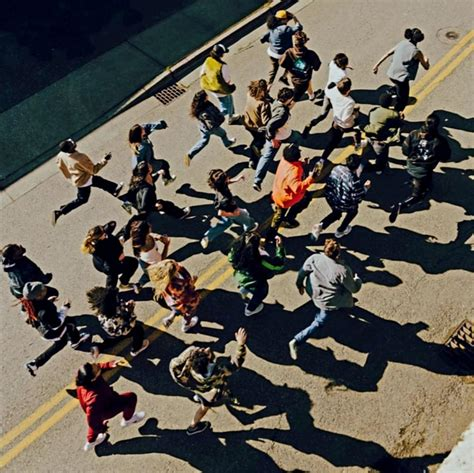

Home Town Hero

Original song.
Oblé Reed
[Intro]
Yeah, huh, yeah
Huh, lemme talk man, lemme talk
It's about time, bro, haha, yeah
Uh
[Verse 1]
Took my old homies to the same place they used to jump me at, told 'em run it back
Kicked my old girl out the show, she ain't get her money back, where's the fun in that?
Now I'm beefin' with God (Actually, no)
And I'm smokin' to see what this Jesus been on (Yup, that's more like it)
The only explainable reason it's taking this long, and I gotta refocus
Cannot rely on the Hocus and Pocus, it's harder to breathe when I'm under this POTUS
And how do you win when's it's money the motive?
I started my learning after my diploma, and all of these years spending under the bus
They asking Moon "Will you make it?" I'm raising my hand like
"I know it, I know it, I know it"
Uh, what you do when the city you love don't love you back? (Love you back)
What you do when the backs you got don't got your back? (Got your back)
Put a pin in all of that effort, tryna put your city on the map
Not the hero they wanted (Wanted), but the hero they needed so bad
[Chorus]
I ain't Superman
I ain't bulletproof
I'ma tell the truth
I be just like you, uh
I don't run the world, but a boy can dream
Just a underdog comin' from the underneath
[Verse 2]
H-H-Honestly, my roots deeper than motivational speakers
How come they makin' they mill's and they suddenly don't wanna speak up?
The people that meant to be heroes, don't even wanna be heroes
Fallin' in love with the zeroes, I ain't even know that they saying reverse in that way, but I gotta get work in the day
Finally ran out of emergency days, I got stomped out
Wrang out, dry, still made rehearsal that day
[Bridge]
It's a bird, it's a plane, it's the moon
Feelin' lost, I don't know what I'm gon' do right now
Except myself, I don't got no one to prove right now
So why does it feel so high pressure?
[Verse 3]
Marvelous, overly confident, I leave the consequences to the copycats
Sacrifice skin on my back, how 'bout you go copy that?
All of your problems you left at the bottom, it's up, up and away
I called up the mayor, I told them I got it, it's up, up and away
[Chorus]
I ain't Superman
I ain't bulletproof
I'ma tell the truth
I be just like you, uh
I don't run the world, but a boy can dream
Just a underdog comin' from the underneath